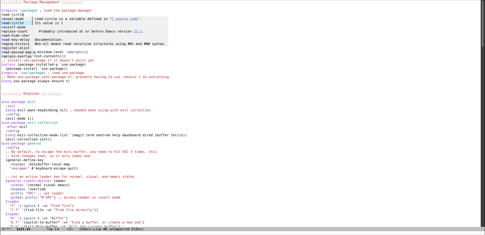

Preface
This is a starters' guide for somebody wanting to try out emacs, coming from nvim. This is written from my perspective as somebody who used Neovim for a while. I had a configuration I was really happy with when using nvim, but its' limitations made my eyes wander to other options.
Since then, I've switched and landed on emacs as my preferred editor, and I'm extremely happy with it. My main reasons for switching to emacs compared to neovim:
Configuration and Extensiblity
Emacs is entirely configured in a single language, elisp, and emacs itself
is primarily written using this language. With this being the case, when you configure emacs, you're basically editing
the source code itself, instead of interacting with a predefined API such as neovim. Emacs lets you configure the
core functionality of emacs itself, and do many things which just aren't possible in neovim.
This allows for a far greater degree of customizability, which is important because I feel an editor you spend a large amount of time in should be custom suited to your needs or prefernces, no matter how granular.
Documentation
Emacs is self-documenting. You can view definitions of functions and variables directly from within emacs to see
what they're meant to do and why they are there. Anytime you see a function in someone's configuration, and you wonder:
"What is this even doing", you can use build in functions like describe-variable or describe-function to view them.
For example, if I use the describe-variable function to view the definition of the gc-cons-threshold I would get
the following display:
Packages
Emacs has packages/plugins written for it that I cannot find a suitable replacement for in neovim. Whether that be due to the fact that they simply haven't been written yet, or phycially can't exist within neovim due to previously mentioned API limitations, or the lack of a GUI.
A few examples of these packages/features in my case include:
-
Magit - An unbeatable git client
-
Org Mode - A mode for writing notes and documents in markup (this webpage is written in org)
-
Tramp - The built-in remote connection client, allows connecting and editing files over SSH, SMB, etc, without having to install another instance of the editor on a remote device.
-
Dired - The built-in file browser. Dired is one of the best file browsers I've used in general, not just in regards to editors.
Getting Started
With the preface in mind, this will be a short guide to start building your emacs configuration, including some packages which I feel are essential to the experience for anyone coming from neovim. This is not meant to be the full experience, and I may delve into deeper configuration with things like LSP and Treesitter in a later article. This guilde is meant to serve as a starter point.
As previously mentioned, emacs is written and configured using elisp. For a run-down on how the language works,
check out my other guide here.
Emacs searches for an init.el file in the ~/.emacs.d first, then ~/.config/emacs OR $XDG_CONFIG_HOME/emacs if it is set.
Here are some useful keybinds for when getting started (C = Ctrl, M = Meta/Alt):
M-x- The command launcher, you can use this to execute any interactive function in emacs, likedescribe-variableordescribe-functionC-h v- Built in shortcut for using thedescribe-variablefunction to view a variable's definitionC-h f- Built in shortcut for using thedescribe-functionfunction to view a function's definition
Package Manager
To start things out, we'll need to enable and use the build in package-manager, package.el. We can add the following
lines to our configuration to start using it:
(require 'package) ; load the package manager
(setq package-check-signature nil) ; override signature errors
;; add package archives to package manager
(add-to-list 'package-archives
'("melpa" . "https://melpa.org/packages/") t)
(package-initialize) ; exactly what it sounds like
;; pull archvies and prevent warning messages only on very first startup
(unless package-archive-contents
(progn
(setq warning-minimum-level :emergency)
(package-refresh-contents)))This will load the package manager, and pull the package archives and MELPA and the default ELPA on the first startup.
Next, we can setup use-package which is a unified framework that simplifies and consilidates the installation and configuration
of packages.
To do so, drop the following into your configuration:
;; install use-package if it doesn't exist yet
(unless (package-installed-p 'use-package)
(package-install 'use-package))
(require 'use-package) ; load use-package
;; Make use-package uses package.el, prevents having to use :ensure t on everything
(setq use-package-always-ensure t)The above elisp will install use-package if it doesn't exist, and integrate it with the package manager.
You'll see many keywords with use-package during this guide. To see them all, you can use the keybind C-h f on use-package
to see them all, but here are the ones used in this guide:
init- This section is run before the package is loadedconfig- This section is run after the package is loadedafter- Load the package only after a differnt specified package is loadedgeneral- Used for general integration for keybinds, which I will cover a bit further down, this is only an option if you have general.el installed
Evil Mode
Definitely the most important package for someone migrating from neovim/vim. This packages enables emacs to ues Vim bindings in almost the exact same fashion you may be used to. For me, vim bindings are essential.
To install and use evil, you can use the following:
(use-package evil
:init
(setq evil-want-keybinding nil) ; needed when using with evil collection
:config
(evil-mode 1))
(use-package evil-collection
:after evil
:config
(setq evil-collection-mode-list '(magit term help dashboard dired ibuffer tetris))
(evil-collection-init))
This will install and configure evil-mode and evil-collection. Evil-collection is a set of predefined
vim bindings for many popular build in modes, and other popular packages. You can see the defined modes we added
to this example are magit, term, help, dashboard, dired, and ibuffer. (also tetris)
Keybinds
General
Now that we have evil mode setup, we can start defining our own personal binds. Working with bindings with Evil-Mode can
be tricky and there can be some gotcha's, so, I recommend using a package called general to simply this.
Similar to use-package, general is a unified framework to operate on keybindings, and has special integration
with evil.
To start using it, we can add the following:
(use-package general
:config
;; By default, to escape the mini-buffer, you need to hit ESC 3 times, this
;; bind changes that, so it only takes one.
(general-define-key
:keymaps 'minibuffer-local-map
"<escape>" #'keyboard-escape-quit)
;; Let an active leader key for normal, visual, and emacs states
(general-create-definer leader
:states '(normal visual emacs)
:keymaps 'override
:prefix "SPC" ;; set leader
:global-prefix "M-SPC") ;; access leader in insert mode
(leader
"f" '(:ignore t :wk "Find file")
"f f" '(find-file :wk "Find file directly"))
(leader
"b" '(:ignore t :wk "Buffer")
"b f" '(switch-to-buffer* :wk "Find a buffer, or create a new one")
"b k" '(kill-this-buffer :wk "Kill the current buffer")
"b r" '(revert-buffer :wk "Reload the current buffer"))
(leader
"c" '(:ignore t :wk "Comment")
"c r" '(comment-region :wk "Comment selection")
"c l" '(comment-line :wk "Comment line"))
(leader
"h" '(:ignore t :wk "Help")
"h f" '(describe-function :wk "Help function")
"h v" '(describe-variable :wk "Help variable")
"h m" '(describe-mode :wk "Help mode")
"h c" '(describe-char :wk "Help character")
"h k" '(describe-key :wk "Help key/keybind")))
In this example, we define a key-override for the minibuffer-local-map. This keymap is used when interacting
with the minibuffer, such as when using M-x.
Following that, we setup a leader key, which I use space for. The :ignore keyword will ignore the keypress
so no action is triggered until a followup key defined it pressed. The :wk keyword adds a description used for which-key integration, which
we will setup shortly.
Keychord
If you're like me, I always prefered to have ESCAPE mapped to jj in vim. You can recreate this behavior in Emacs with
the keychord package.
Heres an examle:
(use-package key-chord
:init
(key-chord-mode 1)
:config
(setq key-chord-two-keys-delay 1
key-chord-one-key-delay 1.2
key-chord-safety-interval-forward 0.1
key-chord-safety-interval-backward 1)
(key-chord-define evil-insert-state-map "jj" 'evil-normal-state))
The settings defined in the config are what I feel to be the closest to the default neovim/vim settings. Here, we map
jj to return to the evil-normal-state.
Which Key
If you've used neovim/vim, you've probably setup which-key there at some point as well. Which-key shows a menu
displaying possible followup keybinds corresponding to the given key you pressed.
Here's how we can set it up:
(use-package which-key
:init
(which-key-mode 1)
:config
(setq which-key-side-window-location 'bottom
which-key-sort-order #'which-key-key-order-alpha
which-key-sort-uppercase-first nil
which-key-add-column-padding 1
which-key-max-display-columns nil
which-key-min-display-lines 6
which-key-side-window-slot -10
which-key-side-window-max-height 0.25
which-key-idle-delay 0.8
which-key-max-description-length 25
which-key-allow-imprecise-window-fit t
which-key-separator " → " ))
Now, whenever we hit a key that has a possible key-sequence, we'll kind a nice menu reminding us of the keybinds
we have setup. In this configuration, if I hit SPC-b, I'll get the following prompt:
Minibuffer
The default mini-buffer area (where you are prompted when using the M-x command for example) is pretty lacking by default.
There are a few packages we can use to make things much better in this regard.
Vertico
This replaces the default mini-buffer with a vertical and much more descriptive prompt, we can set it up using:
(use-package vertico
:general
;; you probably want this, lets backspace delete and entire directory completion, instead of
;; one char at a time.
(:keymaps 'vertico-map
"<backspace>" #'vertico-directory-delete-char
"DEL" #'vertico-directory-delete-char)
:init
(vertico-mode))
Here you can also see we use the :general use-package keyword. This allows us to setup general bindings for the
package/keymap we specify.
Heres what the mini-buffer prompt looked like before we installed this package:
And heres what it looks like after:
Marginalia
Marginalia provides descriptive annoations to the mini-buffer, and overall makes searching for information a lot easier.
We can install it by using the definition:
(use-package marginalia
:init
(marginalia-mode))Now, our output is much more descriptive:
Orderless
Orderless makes is a completion style that divides searches into space seperated characters or words, and doesn't need to be sequential. It ammends this style to both the mini-buffer as well as corfu which we will setup after this.
For example, if I did ran M+x and input "key desc", without orderless, I would get the following output:
After installing orderless, it can match based on my search terms seen here:
Installing orderless is simple enough, just use the following:
(use-package orderless
:config
(setq completion-styles '(orderless basic)
completion-category-overrides '((file (styles basic partial-completion)))))Completions
Corfu + Cape
Emacs has a few different completion framworks you can use, but the best I've found is Corfu. Corfu can be integrated
with many completion methods like an LSP, and/or other packages such as Cape which provides completion functions for things
like elisp code, keywords, and words present in the buffer.
We can set these up with the following:
(use-package corfu
:config
(setq corfu-popupinfo-delay 0
corfu-auto t
corfu-cycle t
corfu-preselect 'prompt
corfu-auto-delay 0.2
corfu-auto-prefix 2)
(advice-add 'eglot-completion-at-point :around #'cape-wrap-buster)
:init
(corfu-popupinfo-mode)
(global-corfu-mode)
(corfu-history-mode))
(use-package cape
:init
(add-to-list 'completion-at-point-functions #'cape-dabbrev)
(add-to-list 'completion-at-point-functions #'cape-file)
(add-to-list 'completion-at-point-functions #'cape-elisp-block)
(add-to-list 'completion-at-point-functions #'cape-keyword))Now we'll be prompted for completions when entering in emacs function or variable names, and will provide the documentation for them. This makes things a bit easier to write/undertand when starting out.
Heres what those completions may look like: 
Look and Feel
Theme
Emacs by default is in light mode, which disturbs me to the core of my soul. We can replace it with a dark theme. In this example, we will use Catpuccin, but you can find some others here.
To install, we can add the following:
(use-package catppuccin-theme
:config
(setq catppuccin-highlight-matches t)
(load-theme 'catppuccin t))Now our eyes wont be fried anytime we open emacs:
Dashboard
Every good editor needs a sick dashboard. The main option used in emacs is dashboard.el. Lets add it in:
(use-package dashboard
:config
(dashboard-setup-startup-hook))Now we're cooking:
Diredfl
This package changed the highlighting used in dired buffers. As stated in the preface, dired is one of the best
file browsers I've ever used in general, so you'll probably spending a lot of time looking at it. We can install using:
(use-package diredfl
:config
(diredfl-global-mode))Heres a before and after:
Preferences
Here are some other useful tweaks/peferences you can add in if you're inclinded to do so:
;; set font size to 12 point
(set-face-attribute 'default nil :height 120)
;; disable menus
(menu-bar-mode -1)
;; disable toolbar
(tool-bar-mode -1)
;; disable scrollbar
(scroll-bar-mode -1)
;; automatically close pairs like (), [] and {}
(electric-pair-mode 1)
;; highlight the current line
(global-hl-line-mode)
;; automatically indent
(electric-indent-mode t)
;; display line numbers
(global-display-line-numbers-mode 1)
;; truncate lines, nowrap
(setq-default truncate-lines t)
;; stop emacs from inserting impertive configs into init.el
;; by dumping them into a custom.el file that will never be loaded
(setq custom-file (concat user-emacs-directory "/custom.el")
make-backup-files nil ; stop creating backup ~ files
auto-save-default nil ; stop creating autosave # files
create-lockfiles nil ; stop creating lock .# files
blink-cursor-mode nil ; exactly what is sounds like
use-short-answers t ; lets you type y,n instead of yes,no when prompted
use-dialog-box nil ; disable gui menu pop-ups
display-line-numbers-type 'relative ; enable relative line numbers
password-cache-expiry nil) ; prevents tramp passwords from expiring
;; Automatically refresh dired buffer when a change on disk is made
(add-hook 'dired-mode-hook 'auto-revert-mode)Final Product
Summary
The gist of this setup was getting Vim bindings setup, and some quality of life improvements to fix the default
look and functionality of Emacs. From here, you can check into some other packages you're interested in. Typically on a
package's documention, they have setup steps included for setting up, along with using with use-package.
The corresponding init.el we've written in this guide an be found here.
Here are some other awesome packages I recommend you check out and look into configuring.
% - means the package is built into emacs by default
eglot %- LSP Client for Emacsorg mode %- Tool for writing notes and documents in emacstramp %- Tool for connecting and editing remote filesmagit- One of the best git clients ever created, build directly into emacsyasnippet- Provide snippets for completion for use with corfusideline- Provide LSP diagnostic info directly in the bufferperspective- Different workspaces with different sets of buffers visible to itorg-modern- Enhances the look and rendering of org documentsorg-roam- A note-takers best friendconsult- Can be used as a fuzzy finderaffe- Fuzzy Finder like consult, faster but more experimentalundo-tree- Better handling of undo/redo actions in emacsrainbow-delimters- Uses color to distinguish matching pairs like {} and ()rainbow-mode- Render hex and RGB values directly in the buffer